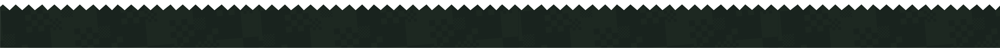
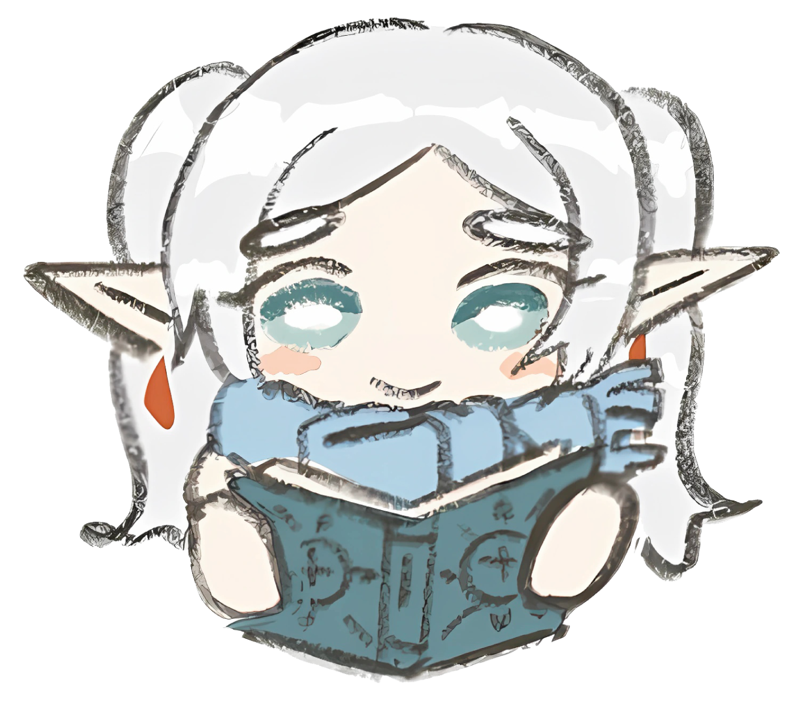
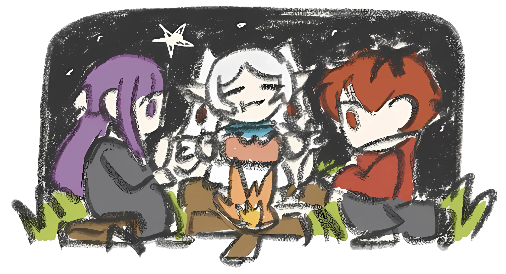

Nombre del proyecto
Breve descripción del proyecto y las tecnologías utilizadas.
Datos personales
“Tener miedo no es malo, es el miedo lo que me ha llevado tan lejos.”


Soy un Desarrollador Full-Stack en formación con una sólida base en la creación de aplicaciones web y móviles. Me enfoco en diseñar soluciones de software eficientes, escalables y orientadas a la experiencia del usuario. Mi meta es aportar valor en proyectos tecnológicos dinámicos mientras inicio mis estudios en Ingeniería en Sistemas, aspirando a convertirme en un arquitecto de software capaz de resolver problemas complejos del mundo real. A nivel técnico, cuento con experiencia práctica integrando tecnologías como React, Node.js, C#/.NET y gestionando bases de datos relacionales y no relacionales (PostgreSQL, MongoDB).

Tecnologías y herramientas que he tenido la oportunidad de aprender y aplicar en mis proyectos hasta el momento. Esta sección muestra las áreas en las que he venido trabajando, agrupadas por categorías para reflejar mi nivel de familiaridad y práctica actual con cada una de ellas.
Breve descripción del proyecto y las tecnologías utilizadas.
Breve descripción del proyecto y las tecnologías utilizadas.
Breve descripción del proyecto y las tecnologías utilizadas.